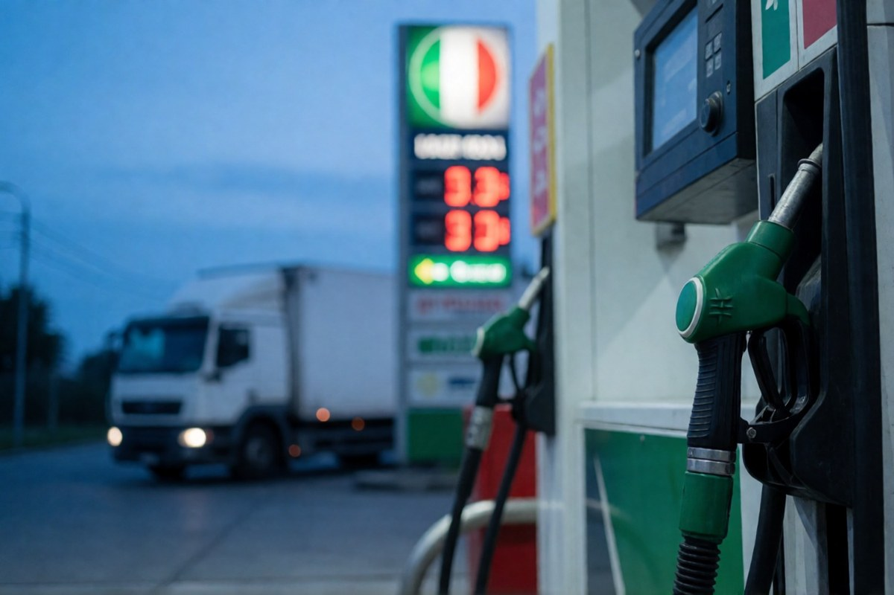

Attualità · 8 novembre 2026
Gasolio, finito lo sconto sulle accise: nessuna proroga in Gazzetta

Il taglio da 4,88 centesimi al litro è scaduto con il 7 novembre e il governo non lo ha rinnovato. Alla pompa, per ora, i prezzi non sono saliti: tengono il tetto delle compagnie e il petrolio in calo.
di Franco Zanghì
Lo sconto sulle accise del gasolio è scaduto con il 7 novembre 2026 e il governo non lo ha prorogato: nella Gazzetta Ufficiale di quel giorno non c'è alcun provvedimento di rinnovo. Da domenica 8 novembre, quindi, il prelievo torna pieno: 4 centesimi di accisa, che con l'Iva fanno 4,88 centesimi al litro. Su un pieno da cinquanta litri sono circa 2,44 euro in più.
Il taglio era durato undici giorni, dal 28 ottobre al 7 novembre. A finanziarlo era la maggiore Iva incassata dallo Stato a settembre proprio per il rialzo dei carburanti: 38 milioni e 700 mila euro. Esauriti quelli, lo sconto si è spento.
Alla pompa, per ora, non si vede
L'aumento fiscale è in vigore, ma i listini non si sono mossi. Secondo l'osservatorio prezzi del ministero delle Imprese, sulla rete stradale in modalità self il gasolio era a 2,224 euro al litro il 7 novembre e a 2,223 l'8 novembre; la benzina a 2,001 e poi a 2,000 euro. In autostrada, l'8 novembre, 2,277 euro per il gasolio e 2,029 per la benzina.
Il ministero attribuisce la tenuta al tetto ai prezzi adottato dalle principali compagnie, che mantiene il self sotto i 2 euro per la benzina e sotto i 2,20 per il gasolio in buona parte della rete. Pesa anche il petrolio: l'Adusbef indica un calo del Brent del 16,2 per cento in pochi giorni, dopo che a fine ottobre aveva superato i 117 dollari al barile. Le associazioni dei consumatori chiedono che il ribasso arrivi alla pompa anche senza sconto fiscale.
Come funziona l'accisa mobile
Il meccanismo nasce con una legge del 2007 e ha una logica semplice. Quando il greggio sale, il prezzo alla pompa sale, e con il prezzo sale l'Iva che lo Stato incassa. Quell'incasso in più, invece di restare all'erario, viene restituito abbassando l'accisa.
Il limite è dentro il meccanismo stesso: si restituisce soltanto ciò che è già stato incassato e già contato. Lo sconto costava circa tre milioni e mezzo al giorno, e con 38,7 milioni disponibili la durata non poteva superare gli undici giorni. Per lo stesso motivo arriva sempre in ritardo, perché si basa sui soldi del mese precedente.
Un anno di sconti a intermittenza
Nel 2026 gli interventi si sono susseguiti. A marzo, con la crisi del petrolio, il governo taglia venti centesimi su benzina e gasolio. Poi la benzina torna quasi al prelievo pieno, il gasolio no. A luglio lo sconto finisce, a fine luglio torna solo sul gasolio per diciassette centesimi, e va avanti di proroga in proroga; ad agosto, per una proroga di due giorni, si usano gli ultimi venti milioni disponibili. A settembre lo sconto scende per gradini, il 6 ottobre sparisce, e per tre settimane non c'è. Poi gli undici giorni finiti ieri. Secondo Repubblica, gli sconti di quest'anno sono costati in tutto circa due miliardi e 700 milioni.
Perché il gasolio costa più della benzina
Dal 1° gennaio 2026 benzina e gasolio pagano la stessa accisa, circa 67 centesimi al litro, più l'Iva al 22 per cento. Prima il gasolio pagava meno: il governo ha alzato la sua accisa e abbassato quella della benzina, perché lo sconto sul diesel era classificato come sussidio ambientalmente dannoso e il suo superamento era un impegno del piano nazionale di ripresa e resilienza.
Se l'accisa è la stessa, la differenza sta prima delle tasse, cioè nella raffinazione. Secondo la Banca centrale europea, a settembre il margine di raffinazione del gasolio pesava 41 centesimi al litro, contro 17 della benzina: con la crisi nello stretto di Hormuz e gli attacchi agli impianti del Golfo il diesel è diventato merce rara. Sul prezzo più alto l'Iva pesa di più. Secondo l'Adusbef, su dati della Commissione europea, le tasse valgono circa il 48 per cento del prezzo del gasolio, contro una media europea sotto il 38; in un anno le accise su benzina e gasolio portano allo Stato circa 26 miliardi.
Il confronto europeo al 2 novembre dava il gasolio a 2,24 euro in Italia, 2,37 in Francia, 2,28 in Germania e 1,90 in Spagna. Il trasporto pesante ha un rimborso trimestrale delle accise, e per quel settore gli sconti a intermittenza contano poco.
Un meccanismo che restituisce agli automobilisti l'Iva incassata in più ha una sua logica. Ma se dura undici giorni e poi si spegne, non è una politica dei prezzi: chi fa duecento chilometri al giorno per lavorare ha bisogno di sapere quanto pagherà il mese prossimo, non la settimana prossima.
Fonti
- Il Sole 24 Ore, «Gasolio, fine taglio accise: in Gazzetta non c'è la proroga dello sconto», 7 novembre 2026
- Sky TG24, «Scaduto il taglio delle accise sul gasolio, rischio rincari per il diesel», 7 novembre 2026
- Tgcom24, «Carburanti, proroga finita: scade il taglio delle accise sul gasolio», 7 novembre 2026
- Fanpage, «Il governo non rinnova lo sconto sulle accise del gasolio», 7 novembre 2026
- Il Fatto Quotidiano, «Accise gasolio: prezzi in rialzo senza proroga», 7 novembre 2026
- Capitalist, «Accise gasolio, finito lo sconto: i prezzi oggi non salgono», 8 novembre 2026, per i rilevamenti dell'osservatorio prezzi e i dati Adusbef
- Osservatorio prezzi del ministero delle Imprese e del made in Italy, rilevazioni del 7 e dell'8 novembre 2026
Dato in movimento alla data di pubblicazione: i prezzi alla pompa dell'8 novembre non riflettono ancora l'aumento dell'accisa, e possono cambiare nei giorni successivi. Le fonti non coincidono sulla data di decorrenza: alcune testate indicano il 7 novembre come primo giorno senza sconto, altre l'8; la Gazzetta Ufficiale del 7 novembre non contiene la proroga, quindi lo sconto si considera scaduto con quella giornata. Il calo del Brent è un dato Adusbef, non del ministero.